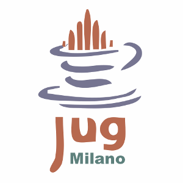

{{ site.description }}
Il JUG Milano è un gruppo di appassionati di programmazione che lavorano o gravitano attorno a Java, alla JVM e a tutte le tecnologie del suo ecosistema. Ma non solo.
Il principale strumento di comunicazione del gruppo è la mailing list (vedi la sezione contatti per maggiori informazioni), sulla quale è possibile chiedere informazioni o suggerimenti sul linguaggio o sulle tecnologie, postare link interessanti e - per chi vuole - proporsi come speaker per un incontro.
Il JUG Milano ha una mailing list su Yahoo Groups. Per poter postare, bisogna iscriversi al gruppo seguendo il link "Join Group" che si trova sulla pagina del gruppo Yahoo.
Oltre alla mailiing list, abbiamo un profilo su GitHub, Twitter, LinkedIn e Google+: in fondo a ogni pagina potete trovare i riferimenti.